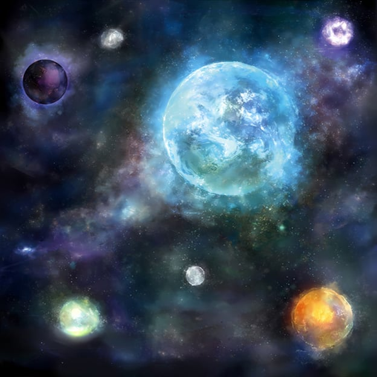
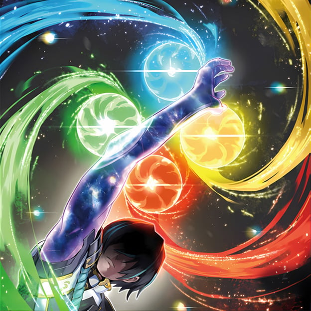

If he regained his emotions, he might destroy the world again. He didn't want to disappear after coming this far. "It's sad to destroy this beautiful world." "Just destroy everything..." These were the voices of his clones. Though they had swalled and became independent, they were also his own voices. "Fear" fought alongside him, and feared losing himself and his comrades more than anything.

Thanks to the light of Shangri-La, the "anger" still desires destruction... Each has strong feelings, but this endlessly swelling passion is probably not something they can control. As Visas is about to make a dark decision, another voice echoes. "Don't be afraid" It's the voice of "Joy" that saved him. The man who has been facing negative emotions in Shangri-La continues to speak. Don't be swayed by strong emotions, turn them into strength. Destroy your weak self to create a new you. Hearing these words, Visas decided to unite his heart with his clones once again. With what little power he had left, he touched the four glowing balls, and four emotions flowed into him.
